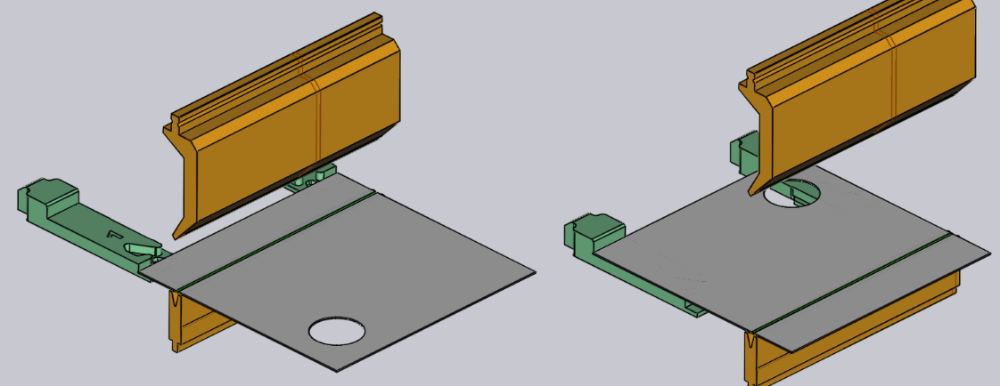

Bir bükümü düzenleme
Bir büküme yönelik temel ayarlar, Büküm paneli kullanılarak görüntülenebilir ve düzenlenebilir. Belirli bir büküme yönelik olarak büküm panelini açmak için:
-
Bükümü seçmek için, Büküm gezinti öğesinde bir büküme tıklayın.
-
Bu bükümü düzenlemek üzere büküm panelini açmak, için aynı büküme tekrar tıklayın.
Alternatif bir yöntem:
-
Ctrl+Büküm gezinti öğesinde bir büküme tıklayarak bükümü seçin ve o büküme yönelik düzenleme panelini açın.
Büküm paneli

Büküm paneli yan taraftaki gibi bir görüntüye sahiptir. Büküm üzerinde çalışmaya yönelik bazı ayar ve faaliyetler içerir.
-
Position girişi, bükümü makine boyunca hareket ettirmek için kullanılır. Burada gösterilen değer, makinenin ölçeğinde bükümün sol ucunun pozisyonudur. (Bükümü sürükleyerek pozisyonunu etkileşimli olarak da ayarlayabilirsiniz, aşağıdaki bölüme bakın).
-
Setup ve Station listeleri, bu büküm faaliyetini farklı bir kuruluma taşımak için kullanılır.[1] station[2] (bu kurulum içerisinde). Bu seçenekler sırasıyla, parçanın birden fazla kurulumu bulunuyorsa veya kurulumun birden fazla istasyonu bulunuyorsa görünür. (Ayrıca, bir bükümü farklı bir istasyona taşımak üzere iş parçasına tıklayıp farklı bir istasyonla hizalanana kadar sürükleyebilirsiniz).
-
Turn Part düğmesi, parçayı çevirmek için kullanılabilir (makineye diğer taraftan yerleştirilir). Aşağıdaki resimde, bu düğmeye tıklandığında oluşan sonuç gösterilmektedir (bu düğmeye tekrar tıklandığında, orijinal yön geri yüklenir):
 -
Ungroup düğmesi, çoklu açıklık içeren bir büküm (iki veya daha fazla eşdoğrusal büküm açıklığından oluşan bir büküm) düzenleniyorken görünür. Eğer gruplandırılmış büküm gruplanması kaldırılabiliyor ve ayrı bükümler olarak işlenebiliyorsa, bu düğme bu büküm faaliyetini iki ayrı faaliyete ayırmak amacıyla kullanılabilir. Aşağıdaki resimde, gruplanma kaldırıldıktan sonra büküm 1’in (sıralama modunda 1a ve 1b olarak gösterilir) büküm 1 ve 2’ye nasıl ayırıldığı gösterilmektedir:

-
Angle Measure bağlantısı, büküm için açı ölçüm panelinin gösterilmesi kullanılır. Bu düğme, seçilen makineye yönelik olarak bir veya daha fazla açı ölçüm yöntemi mevcutsa görünür.
-
Skip Bend düğme, bu belirli bükümün TecZone Bend tarafından işlenmemesini sağlar. Bu, bazı bükümlerin bükme presinkinden farklı bir teknolojiyle işlendiğini (ör. zımba veya panel bükme makinesi) belirtmek için kullanışlıdır.[3]
-
TecZone Bend tarafından bir gömmeli bükme faaliyeti uygulanabilmesi için Coining kontrol kutucuğunu işaretleyin. Bu, yalnızca gömmeli bükme mümkünse etkinleştirilir (tipik olarak bu, bükme yapabilen bir zımba ve dişi takım bulunduğu anlamına gelir). Gömmeli bükme, daha fazla presleme kuvveti gerektirir, ancak serbest büküme göre daha dar bir büküm radyüsü sağlayabilir. Ayrıca gömmeli bükme, bu büküm faaliyetinde gerekli olan tam açıda bir zımba ve dişi takım da gerektirir.
-
Pre-bending seçeneğini etkinleştirerek bu bükümü iki ayrı faaliyete ayırabilirsiniz: Ön büküm ve tekrar büküm. Varsayılan olarak TecZone Bend, tekrar bükümü bir sonraki bükümün hemen sonrasındaki pozisyona taşır. Ön bükme kullanımıyla ilgili daha fazla bilgi için aşağıdaki bölüme bakın.[4]
-
Prev ve Next düğmelerini kullanarak parçadaki farklı bükümleri düzenleme arasında geçiş yapabilirsiniz.
Gelişmiş faaliyetler
Bir büküm kapsamında yürütebileceğiniz daha gelişmiş faaliyetlerden bazıları aşağıda açıklanmıştır.
Ön bükme kullanma
Bazı çarpışma tipleri, büküm faaliyetinin ön büküm ve tekrar büküm olarak ikiye ayrılması yoluyla önlenebilir. Basit bir örnek:

Yukarıdaki parça iki büküme sahiptir ve ikinci bükümde parça, dişi takım rayına çarpmaktadır. Bu, sıralama değiştirilerek düzeltilemez. Bunun bir çözümü, büküm 1’e ön bükme eklemek üzere seçip Pre-bending kontrol kutucuğunu işaretleyerek büküm 1’e ön bükme eklemektir.

Resimde görüldüğü üzere, bu işlem büküm 1’i ön bükme ve tekrar büküm (şimdi büküm 3 haline gelmiştir) olarak ikiye ayırır. Büküm gezinme öğesindeki simgeler, artık büküm 1’in ön bükme, büküm 3’ün ise tekrark büküm olduğunu göstermektedir. Ön bükme açısını hassas olarak ayarlamak için Prebend giriş kutusunu kullanabilirsiniz. Bu örnekte açı 120 olarak ayarlanmıştır; bu yüzden parça düz durumdan (180 iç açı) ilk aşamada 120 dereceye, sonra da ikinci aşamada 90 dereceye bükülür. Buna göre, büküm 2’nin işlenmesi sırasında ilk flanş tamamen bükülmez ve böylece dişi takımla çarpışması önlenir (aşağıdaki resimler büküm 2 ve 3’ün işlendiği durumu gösterir):

Birden fazla bükümü düzenleme
Aynı anda birden fazla bükümün düzenlenmesi mümkündür. Bunu yapmak için:
-
Seçmek için, Büküm gezinti öğesinde bir büküme tıklayın.
-
Hepsini bir arada düzenlemek için Shift öğesine basılı tutun ve ek bükümler seçin.

Yandaki gibi bir düzenleme paneli görüntülenir. Tüm bükümlerde birlikte yürütülebilecek bazı düzenleme faaliyetleri burada gösterilir. İlave olarak, bu panelde bazı ek düğmeler görüntülenebilir:
-
Group düğmesi, eşdoğrusal olan ve tek bir çoklu açıklıklı büküm faaliyetine dönüştürülebilecek olan iki veya daha fazla büküm seçtiğinizde görüntülenir.
-
Swap Bends düğmesi, tam olarak iki büküm seçtiğinizde görüntülenir ve iki bükümün sırayla değiştirilmesini mümkün kılar (bu, iki bükümün sırayla değiştirilebilmesi durumunda gösterilir).
-
Eğer iki büküm paralel, zıt yönlerde ve birbirinden kısa bir mesafede ise, bunları tek bir Z bükümü altında birleştirmek mümkün olabilir. Bu durumda, Make Z-Bend düğmesi görüntülenir.[5]
Bir bükümü sürükleme
Position giriş kutusu, bir bükümü hassas olarak konumlandırmak için kullanılabilir. Genelde, bir bükümü istenen konuma sürüklemek daha kolaydır. Bunu yapmak için:
-
Büküm düzenleme panelinin açık durumda olduğundan emin olun (büküm numarasına iki kez tıklayarak).
-
Büküm hattının yakınında bulunan parçaya tıklayın ve parçayı sola/sağa sürüklemeye başlayın.
Parçayı tuttuğunuz yere (büküm hattının ortasına veya sol/sağ kenarlara yakın) bağlı olarak, TecZone Bend bükümü bir takım istasyonuna göre hassas olarak pozisyonlamanıza yardım eden otomatik kenetleme hatları oluşturulur. Aşağıdaki resimde, bir bükümün ortasından veya sol kenarından tutularak sürüklenmesi gösterilmektedir.

Yukarıdaki şekillerdeki kenetlenme hatları, bükümün tam olarak takım istasyonunun ortasında veya sol kenarı zımba ve dişi takımla tamamen hizalanmış olarak konumlandığını gösterir.